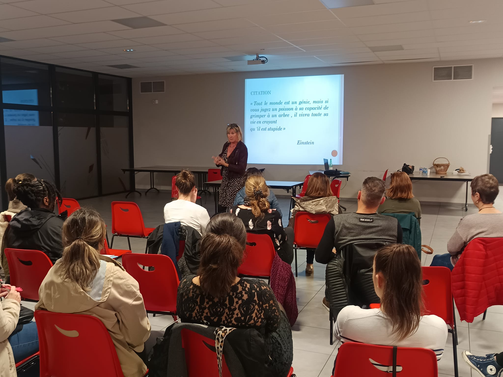
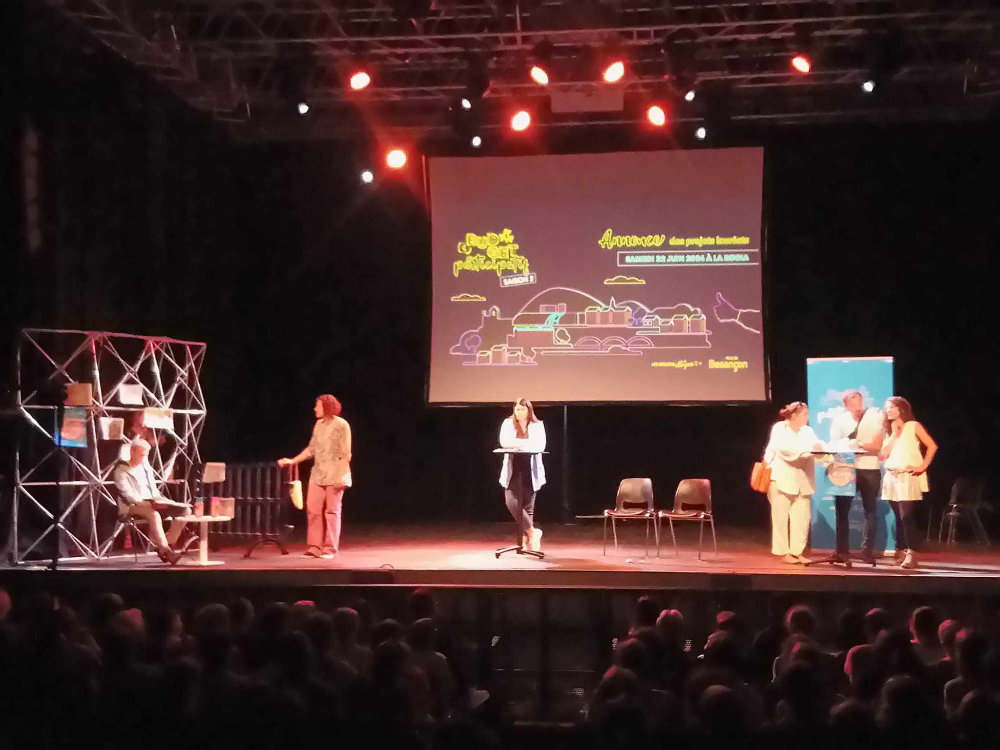
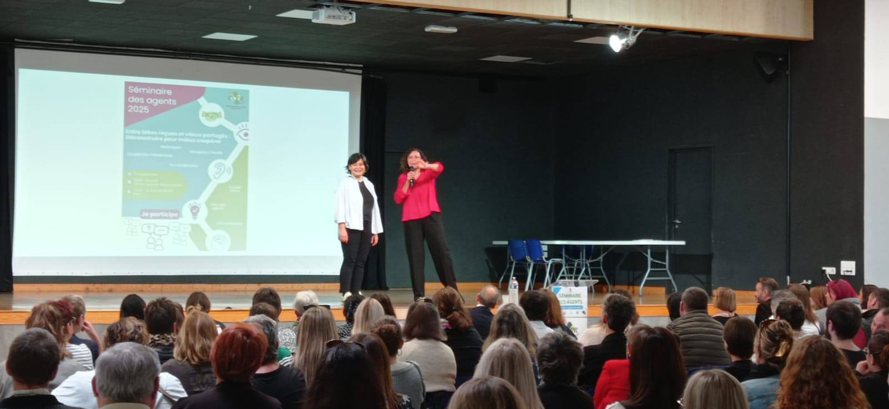

MAR propose des interventions qui mêlent apports théoriques et approche théâtrale pour rendre vos événements vivants, participatifs et mémorables.
Le concept : Un mélange d'apports théoriques sur une thématique particulière et des saynètes de théâtre forum qui viennent illustrer le sujet. Cela permet de mettre en pratique immédiatement les notions abordées.
Des mini-scènes ponctuent et rythment la conférence, les participant·es peuvent intervenir pour partager des perceptions, points de vue et alternatives.


Le concept : Un mélange d'apports théoriques et de saynètes qui ne sont pas jouées en forum. Les personnes du public sont plutôt observatrices qu'actrices.
Nous pouvons aborder les défis et enjeux qui suscitent votre intérêt :
Marre des séminaires un peu trop classiques, voire ennuyeux ? MAR est là !
Nous vous proposons d'animer tout ou partie de votre séminaire. Trois formules :
Après avoir observé votre événement, nous vous proposons une synthèse théâtralisée et humoristique. Original et mémorable !
Notre équipe s'infiltre parmi vos invité·es pour jouer une proposition théâtralisée surprenante, co-définie avec vous.
Jeux et activités pour mettre en mouvement vos participant·es et renforcer leurs liens. De 5 à 200 personnes. Rires garantis !

Contactez-nous pour construire ensemble l'intervention qui correspond à vos besoins.
Nous contacter